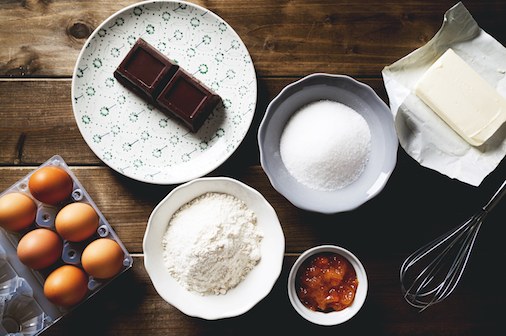

Doce Maria

Bolo Floresta Negra
Ingredientes

- 6 ovos
- meia xícara (chá) de açúcar
- meia xícara (chá) de farinha de trigo
- 2 colheres (sopa) de Cacau em Pó NESTLÉ® DOIS FRADES®
- meia colher (sopa) de fermento em pó
- meia xícara (chá) de rum
- 500 g de chantilly
- 1 xícara (chá) de cerejas picadas
- 200 g de Chocolate NESTLÉ® CLASSIC® Meio Amargo
- cerejas inteiras para decorar
Modo de Preparo
- Em uma batedeira, bata os ovos e o açúcar por 5 minutos ou até dobrar de volume.
- Desligue a batedeira e adicione a farinha, o Cacau em Pó NESTLÉ DOIS FRADES, o fermento e misture delicadamente.
- Despeje a massa em uma forma redonda (25 cm de diâmetro), untada com manteiga e polvilhada com farinha e leve ao forno médio (180°C), preaquecido, por cerca de 40 minutos. Desenforme e deixe esfriar.
- Depois de frio, corte o bolo ao meio e umedeça com o rum.
- Recheie com uma parte do chantilly e as cerejas. Em seguida, cubra com o chantilly restante e com raspas do Chocolate NESTLÉ CLASSIC. Decore com as cerejas inteiras e leve à geladeira por 30 minutos para resfriar. Sirva